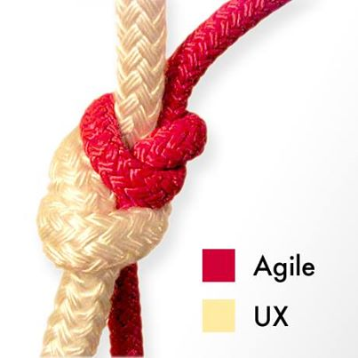
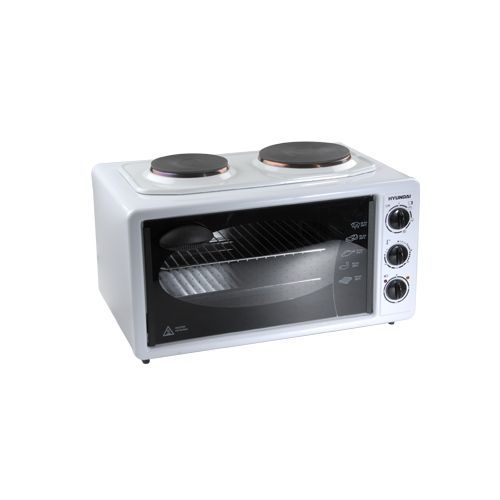
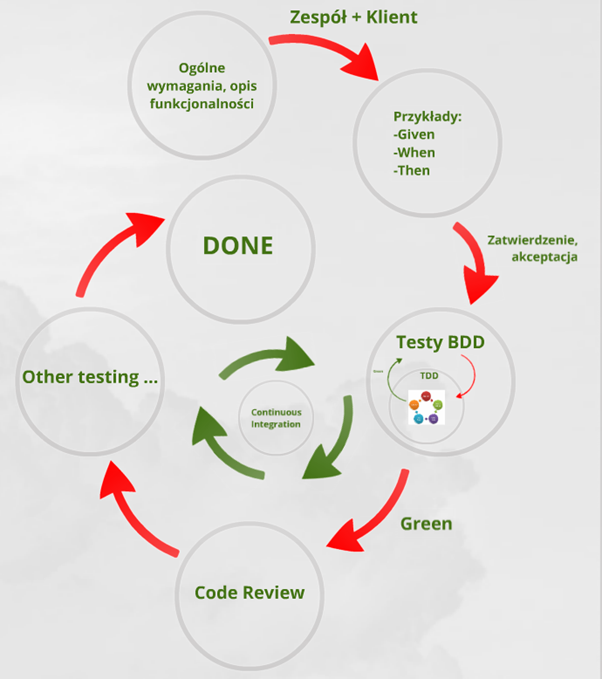
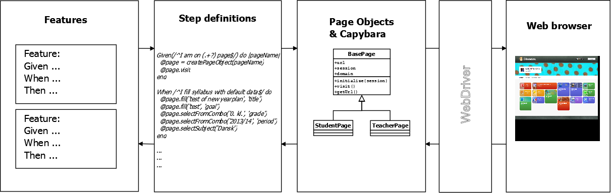
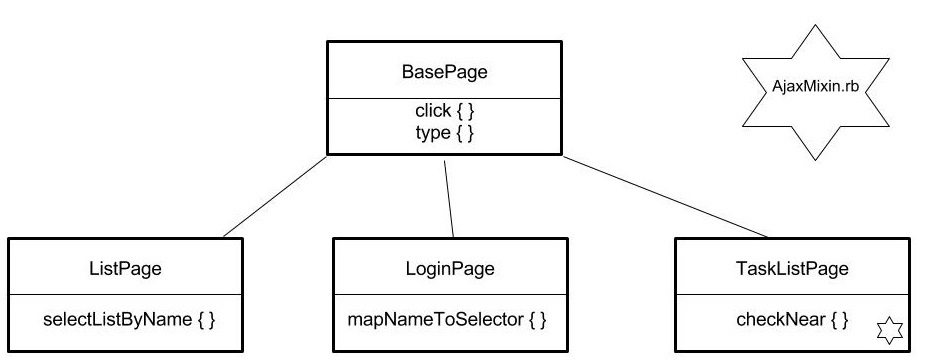
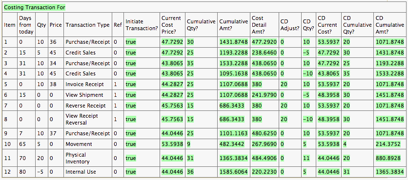

Zwinność w automatyzacji
Agile & Automation Days 16.11.2015
License: CC BY-ND 3.0 PLPracujemy w Agile
Pracujemy z klientem
Co dostarcza UCD?
Persona
- Zdjęcie
- Opis - wiek, zawód, krótkie wprowadzenie
- Potrzeby
- Cele
- Czego nie lubi?
Korzyści posiadania persony
- Użytkownik staje się namacalny
- Odwołujemy się do konkretnej osoby
- Nie mówimy użytkownik
- Wykorzystujemy je do tworzenia user stories
User Story
- Technika opisywania wymagań
- Krótkie historyjki opisujące akcje do wykonania w systemie
- Zrozumiałe dla zespołu i dla klientów
- Ważne są cele użytkownika, nie właściwości systemu
Konstrukcja user story
- Jako → persona
- Chcę → wykonać akcję - ale nie rozwiązanie!
- Żeby → osiągnąć coś ważnego dla mnie
Wymagania vs user story
- Produkt powinien być biały
- Produkt powinien być podłączony do prądu
- Produkt powinien opiekać z góry i z dołu
Czy to jest to czego klient chciał?
Popełniliśmy typowe błędy!
- Technikalia
- Produkt zamiast doświadczeń użytkownika
- Parametry i cechy zamiast zachowań
- Sugerowanie rozwiązania
User story
charakterystyka
- Independent
- Negotiable
- Valuable
- Estimatable
- Small
- Testable
Wymagania vs user story
Jako Kamila,
Chcę zjeść tosta z serem w środku,
Żeby zaspokoić głód
Czy poniższe Uesr Story są poprawne?
When użytkownik wsypie kawę do kubka
And użytkownik zaleje kawę wrzątkiem
And użytkownik doda cukier
And użytkownik pomiesza wszystkie składniki łyżeczką
Then kawa jest gotowa do picia"
Chcę przygotować kawę
Żeby sprzedać ją klientowi"
Persona
Matylda Kocur
- DANE:Matylda Kocur
- ZAWÓD:Sekretarka
- WIEK:33 lata
- ADRES:Gliwice
- WYKSZTAŁCENIE:
Studia magisterskie - Chemia -
ŻYCIE OSOBISTE:
- Zamężna
- Dwoje dzieci (4 i 6 lat)
- Uwielbia robić zakupy
- Lubi podróże
- HOBBY:Zakupy, Podróże, Dzieci
- MOTTO:
Czas to pieniądz.
-
NIE LUBI:
- Zapominać
- Nie mieć planu
-
CECHY / OTOCZENIE:
- Perfekcyjna pani domu
- Nowoczesna
- Konkretna
-
OCZEKIWANIA:
- Pomocna dłoń w codziennych zakupach zarówno w pracy jak i w domu
- Łatwość zapisywania zakupów
- Zawsze pod ręką.
Nasz klient to przebojowa kobieta pracująca jako sekretarka, która ma na głowie masę obowiązków, zarówno zawodowych jak i prywatnych.
Chce być uznawana za świetnego pracownika jak i perfekcyjną panią domu, każde nawet najmniejsze potknięcie odbiera jako porażkę. Potrzebuje pomocy w tworzeniu planu obowiązków.
Dzięki nowej aplikacji nie będzie musiała tłumaczyć się przed szefem z braku kawy jak i przed głodnym mężem w domu.
Zbieramy wymagania!
Rozmowa z product ownerem
Zadanie 1
Użytkownik może się zalogować na własne konto
Jako Matylda,
Chcę się zalogować do aplikacji,
Żeby zobaczyć swoje listy zakupów
Zadanie 2
Lista zakupów jest zamknięta kiedy wszystkie jej elementy są oznaczone jako kupione
Jako Matylda,
Chcę zamknąć wszystkie elementy znajdujące się na liście,
Żeby lista została automatycznie zamknięta i nie wprowadzała mnie w błąd
Zadanie 3
Zamknięta lista zakupów jest niedostępna dla użytkownika
Jako Matylda,
Chcę aby moje zamknięte listy zakupów nie były widoczne,
Żeby nie wprowadzały mnie w błąd
Język Domenowy
Kto? Co? Kiedy?
Przykład
- Rzecz kupiona / Produkt zamówiony
- Rzecz do kupienia / Brakujący produkt
- Zamknięta lista
- Otwarta lista
Przerwa
BDD
BDD
- Sposób zapisu
- Mocno zorientowany na Agile
BDD
Opis funkcjonalności i logiki biznesowej z punktu widzenia dostarczonej wartości dla klienta.
To właśnie jeden ze sposobów opisu szczegółów technicznych w języku domenowym, zrozumiałym nawet dla nietechnicznego klienta.
BDD - Formaty
-
Connextra
AS A ... jako kto I WANT ... wykonać cel SO THAT ... osiągnąć korzyść
-
Feature Injection
IN ORDER TO ... osiągnąć korzyść AS A ... jako kto I WANT ... czynność / cel
-
Given/When/Then
-
GIVEN ... warunki początkowe WHEN ... wykonując czynności THEN ... weryfikacja
-
Cykl BDD
Zadanie
Przerwa
Automated GUI tests
Automated GUI tests
- Zautomatyzowane scenariusze testowe.
- Nie za dobry stosunek: KOSZT / ZYSK
GUI - Test Runner
GUI - Page Object
- Odzwierciedlenie strony w kodzie
- Relacja dziedziczenia
- Klasa bazowa - ogół
- Klasa pochodna - szczegół
GUI - Selektory
<div class="container">
<label><input id="option" type="checkbox" />Opcja</label>
<input type="submit" value="Submit" />
</div>
-
CSS
#optiondiv.containerinput[type='submit']
-
XPath
/div/label/input/div[contains(@class, 'container')]/*[contains(text(), 'Opcja')]
Zadanie
Specification By Example
Acceptance Test-Driven Development
- Podobne podejście jak BDD
- Wykonywalna specyfikacja w formie przykładów uruchamiająca kod
Executable Specification
Fitnesse
Korzyści płynące z automatyzacji
- Agile stawia na automatyzację.
- Możliwość przetestowania wielu zestawów danych.
- Minimalizacja żmudnej pracy.
- Szybka informacja zwrotna (GO / NO GO).
Automatyzacja środowiska
Po co osobne środowisko testowe?
- 'U mnie działa'!
- Czasochłonne stawianie środowiska dla nowego pracownika
- Zarządanie konfiguracją
- Środowisko powinno być (mniejszą) kopią środowiska produkcyjnego
Continuous Integration
- automatyczne buildy
- automatyczne testy
- automatyczne wdrożenie? (CD)

http://blog.crisp.se/2013/02/05/yassalsundman/continuous-delivery-vs-continuous-deployment
Wirtualizacja środowiska
- VirtualBox, VMWare, Hyper-V
- Vagrant
- Docker
- IaaC / DevOps
Provisioning
- Chef/Puppet/Ansible/etc.
- Npm/Choco/Bundle/etc.
Przykładowa konfiguracja vagranta
Vagrant.configure(2) do |config|
config.vm.box = "win7IE10_with_winRM"
config.vm.box_url = "http://aka.ms/vagrant-win7-ie10"
...
config.vm.network :forwarded_port, guest: 5985, host: 55985,
id: "winrm", auto_correct: true
config.vm.network "private_network"
...
config.vm.provider "virtualbox" do |vb|
vb.gui = true
vb.memory = "1024"
vb.cpus = 2
vb.customize ["modifyvm", :id, "--clipboard", "bidirectional"]
end
...
config.vm.provision "shell", inline: "choco install ruby1.9 -y"
config.vm.provision "shell", inline: "choco install ruby.devkit -y"
...
end